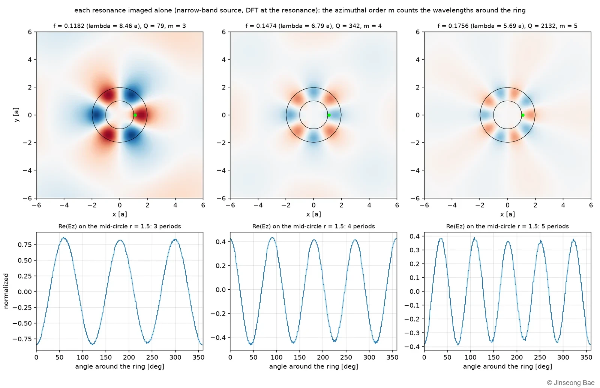
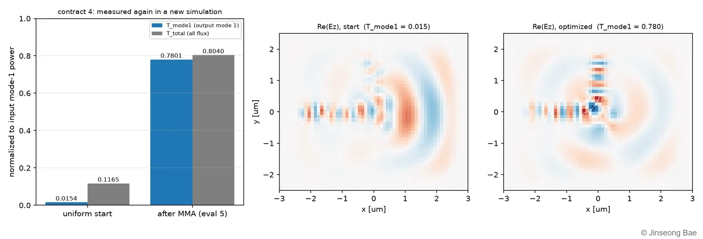

왜 쓰는가
Meep 문서는 API를 나열하는 데 강하지만, FDTD를 처음 접하는 사람에게는 "왜 이 파원을 여기 두는지", "이 숫자를 얼마나 믿어도 되는지"가 빠져 있습니다. 대상 독자는 파이썬은 알지만 FDTD는 처음이고, 광학 기초는 아는 사람입니다.
공식 예제의 재현성을 지키면서, 실행 전에 결과를 먼저 예측해 보고, 틀린 예측도 숨기지 않습니다. 10편부터는 "빛을 가두고 → 꺼내고 → 보내기" 순서로 이어집니다.
글의 규칙
- 예측 먼저계산 전에 예측 표를 쓰고, 결과 비교 표와 같은 행으로 맞춥니다.
- 소스부터 보기파원의 시간 파형과 스펙트럼을 그림으로 확인합니다.
- 7단계 코드단계마다 "무엇을 / 왜 / 틀리면 어떻게 되는지" 세 줄을 붙입니다.
- 수렴 표해상도와 PML 두께를 2–3점씩 바꿔 숫자가 얼마나 움직이는지 보입니다.
- 주장의 경계"주장할 수 있는 것"과 "주장할 수 없는 것"을 한 줄씩 씁니다.
- 클린 코드 재실행블로그에 싣는 코드를 다시 돌려 본문 수치를 재확인합니다.
축은 nm·µm 물리 단위로 쓰고, 비유나 이모지 없이 수치는 표에만 둡니다.
발행한 14편
| 01 | 점광원과 선광원 — 파원 배치, 펄스 시각, flux box | 선광원 한쪽 면 0.92 |
| 02 | 경계 조건과 PML — 반사 경계·PML·Absorber 비교 | PML 1 µm 반사 0.045 % |
| 03 | Reference run 빼기 — 입사·전체·산란장 | 산란 단면적 2.515 vs Mie 2.513 |
| 04 | 직선 도파로와 guided mode | 모드 투과 1.0000, 반사 8e-6 |
| 05 | 굽은 도파로와 반경 | 날카로운 굽힘 0.20 → r 0.7 µm 0.99 |
| 06 | Binary grating과 회절 차수 | 0차 0.759, ±1차 각 0.088 |
| 07 | Meta-atom과 위상 라이브러리 | +1차 0.51 (4단계 상한의 63 %) |
| 08 | Metagrating 역설계 — forward·adjoint·기울기·검증 | +1차 0.496 → 0.623 |
| 09 | 굽은 도파로 역설계 — 자유 설계 영역 | 모드 투과 0.015 → 0.780 |
| 10 | 점광원의 3D 방사 패턴 — image dipole | 해석해 대비 L2 0.22 % |
| 11 | 두 거울 사이 점광원 — LDOS와 Purcell | 해석해 대비 중앙값 0.94 % |
| 12 | 링 공진기 — Harminv, Q, FSR | n_g 3.69, 주파수 차 0.3 % 미만 |
| 13 | 원통 좌표로 3D 계산 — m 급수 | 3D 대비 0.43–0.63 % |
| 14 | 박막 속 점광원의 광추출 효율 | 0.323 (res 80) |




예: 09편 — 숫자를 어디까지 말할 수 있나
11 × 11 자유 설계 영역으로 90° 굽은 도파로를 역설계하는 예제입니다. 최적화 뒤 별도 run으로 다시 재면 출력 mode-1 투과율이 0.015에서 0.780으로 오릅니다.



그리고 같은 글에 이렇게 적었습니다.
주장할 수 있는 것
- adjoint 기울기 5회로 출력 모드 투과율이 0.015 → 0.780 (별도 run)
주장할 수 없는 것
- "0.78짜리 굽은 도파로를 설계했다" — 121픽셀 중 119개가 회색
- 수렴했다 — 평가 5회는 수렴이 아님, 해상도 20에서는 0.64
재실행과 발행
- 블로그용 클린 스크립트를 WSL에서 공통 실행 래퍼로 돌리고, 결과 수치와 그림을 글마다 JSON으로 남깁니다 (Meep 1.33.0).
- 코드는 무차원 단위로 두고, 그림에서만 1550 nm 기준 물리 단위로 바꿉니다.
- 원고(Markdown) → 빌드 스크립트 → GitHub Pages(Jekyll, MathJax)로 발행합니다.
한계
- 공식 예제의 재현과 해설이며 새로운 연구 결과가 아닙니다.
- 01–09편은 대학 Meep 실습 순서를 빌려 구성했고, 각 글에 그 실습 노트북과의 차이를 적었습니다.
- 공식 예제를 개작한 코드는 Meep의 GPL-2+ 조건을 따릅니다.